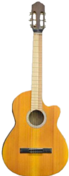
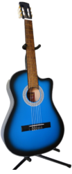

Historia de la guitarra Ver mas
La guitarra, es un instrumento musical de la familia de los cordófonos, es decir los instrumentos que producen su sonido al hacer vibrar las cuerdas.Los orígenes y evolución de la guitarra y su familia no están demasiado claros, ya que numerosos instrumentos similares eran utilizados en la antigüedad, por lo que es usual seguir la trayectoria de este instrumento a través de las representaciones pictóricas y escultóricas encontradas a lo largo de la historia. Existen evidencias arqueológicas en bajorrelieves encontrados en Alaça Hüyük (norte de la actual Turquía) de que en torno al año...
Nuestros Productos
Guitarras acusticas ver mas

$400,000
Guitarra acústica semiecológica
Guitarra acústica ecológica. Fabricada a mano con excelente selección de maderas Cedro.

$200,000
Guitarra acústica GB-1
Contiene: tapas de perillo, aros, fondo y mastil de Cedro, diapasón y puente de Roble, clavijero metálico y boquilla de adhesivoGuitarras electricas ver mas
$799,000
GUITARRA ELECTRICA PACIFICA 012 COLOR NEGRO
Guitarra eléctrica para principiante de alta calidad, cuerpo de Agathis, Mástil de Arce, Diapasón de Palo de Rosa, 3 microfonos tipo Humbucker (doble), Single (sencillo), Single (sencillo) y selector de 5 posiciones. 1 potenciómetro de Volumen General y 1 potenciómetro de Tono General, Puente tipo tremolo y clavijas cubiertas estándar, 22 trastes tipo Medium, Ideal para tocar géneros como Rock, Pop, Blues y géneros musicales afines.
$980,000
GUITARRA ELÉCTRICA PAC-112J SUNBURST
Guitarra eléctrica semi-profesional de gran versatilidad sonora, Cuerpo de Aliso, Mástil de Arce, Diapasón de Palo de Rosa, 3 microfonos tipo Humbucker (doble), Single (sencillo), Single (sencillo) y selector de 5 posiciones, 1 potenciómetro de Volumen General y 1 potenciómetro de Tono General, Puente tipo tremolo y clavijas cromadas diecast, 22 trastes tipo Medium, Ideal para tocar géneros como Rock, Pop, Blues y géneros musicales afines.Guitarras clasicas ver mas
$3,763,900
GUITARRA CLASICA ALHAMBRA 3C
Si eres estudiante de guitarra, con el modelo 3C puedes ver un paso más en términos de rendimiento en comparación con los modelos 1C y 2C, el 3c agrega fijaciones de palisandro, afinadores de mayor calidad e incrustaciones adicionales en la parte posterior de la guitarra, la guitarra Alhambra modelo 3C es una hermosa guitarra. Hecha a mano y cuidando todos los detalles, significa un paso más en la línea del estudiante, un instrumento robusto, versátil y con un tono maravilloso, con un sonido suave y un acabado de muy buena calidad, es una gran opción para trabajar la técnica, una opción segura para iniciarse en el estudio de la guitarra, en cuanto a la montura y la cejilla se ha utilizado la melamina, un material sintético muy transmisor de sonido y que contribuye a un sonido redondo y definido.$190,000
Guitarra Clásica GB-1
Contiene: tapa de Perillo; aros, fondo y mástil hecho en Cedro; diapasón y puente de Roble; clavijero Metálico; boquilla es un AdhesivoGuitarras electroacústicas ver mas
$350,000
Guitarra Electroacústica GB-1AX
Contiene: tapa de Perillo; aros, fondo y mástil hecho en Cedro; diapasón y puente de Roble; clavijero Metálico; boquilla es un Adhesivo; el microfono es activo.
$250,000
Guitarra GB-1PX Electroacústica
Contiene: tapa de Perillo; aros, fondo y mástil hecho en Cedro; diapasón y puente de Roble; clavijero Metálico; boquilla es un Adhesivo; el microfono es pasivo.Quienes Somos
Somos una empresa dedicada a la fabricacion y venta al por mayor y al detal de guitarras de toda clase (acustica, electrica, clasica, electroacustica y semiacustica), somos una empresa 100% colombiana, nos encontramos ubicados en la cuidad de Medellin, Bogota, Cali y Pereira